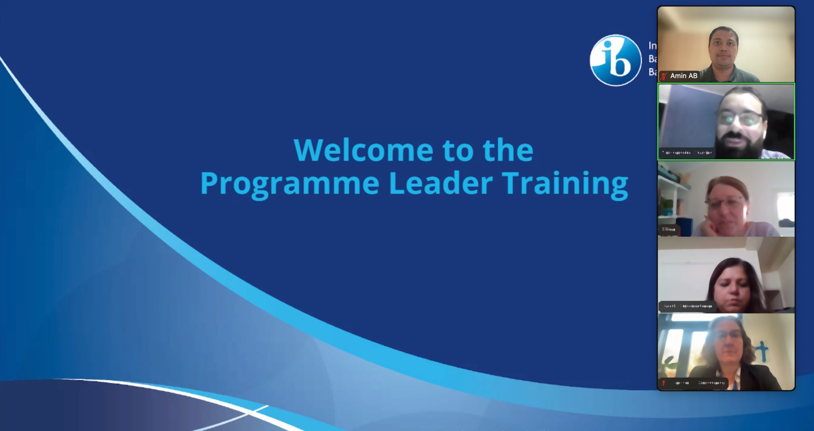

The school ensures that all teachers and pedagogical leadership teams have access to relevant communities that support the development of the programme(s). (0401-03-0200)

Over the past few weeks, I participated in the International Baccalaureate Programme Leader Training. The experience gave me a deeper appreciation for the ways schools bring the IB philosophy to life and how evaluators can support schools in their growth journeys. I'm grateful for the learning and look forward to contributing meaningfully to the IB community.